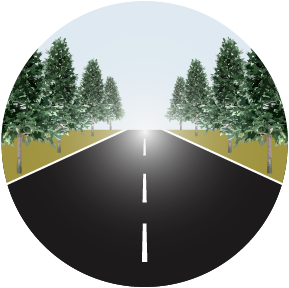
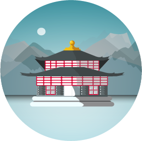
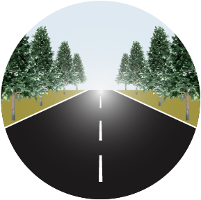
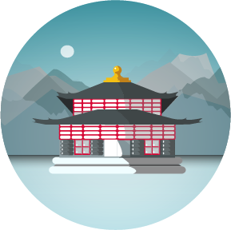

START
セブン-イレブン 大津木下町店
琵琶湖の目の前にある、なんら変わりのないセブン-イレブン
東大阪市にある家からここまでで約2時間！
朝昼兼用のご飯にサンドイッチとお茶を買って20分ほど休憩
すでにお尻も痛いくなってきてるし、
山道を通ったせいで寒いけどここから約8時間走り続けます
1st.
道の駅
湖北みずどりステーション
約2時間ずっと走り続けてやっと第1チェックポイント
実はここまで来る途中に早起きしたせいで眠くて
タンデムシートに乗りながらウトウトしてた
日本の夕日100選に選ばれている場所だけど
真っ昼間で夕日なんて全く見れなかった
2nd.
海津大崎
日本のさくら名所100選に選ばれている「海津大崎」
やっぱりここも季節柄桜なんて咲いてなかった
チャレンジする季節間違えたなぁ
さくらのトンネルならぬ、木の枝のトンネルを進んで�記念写真をぱしゃり！
でも逆光が酷かった
3rd.
メタセコイア並木
この旅の目的の『メタセコイア並木』
約2.4kmにわたって植えられた500本のメタセコイアは
太陽の光をほどよく遮って気持ちのいい風を運んでくれた
訪れたのは11月なのに青々とした葉がたくさんついていて
素晴らしい光景を見ることができた
春夏秋冬、どの季節に来ても感動できる景色でした
4rd.
白鬚神社の湖中大鳥居
メタセコイア並木を抜けてしばらく走ってる間
初めてすれ違ったライダーさんにヤエーをしてもらった！
緊張しながら左手をあげた頃には隣をすれ違ってた
白鬚神社の湖中大鳥居は本殿とは車道を挟んだ場所にあって
ビュンビュン通る車に怯えながら走って見に行った
厳島神社を想像していたのでちょっとしょっぱかった
宿
おごと温泉 里湯昔話 雄山荘
寄り道をしたあと今回の宿にチェックイン
朝夕ご飯と客室露天風呂までついて1人1泊18,000円のお宿
施設内には図書コーナーがあったり
囲炉裏を模したものがあったり。
熱めの湯船でしっかり温まったら
食べきれないぐらいたくさん並んだ晩御飯を食べて就寝
GOAL
再び、セブン-イレブン 大津木下町店
宿を10時にチェックアウトして再びセブン-イレブンへ
走りきった達成感と、お土産の入ったぱんぱんの鞄を抱いて
雨雲から逃げるようにすぐに帰路についた
 


